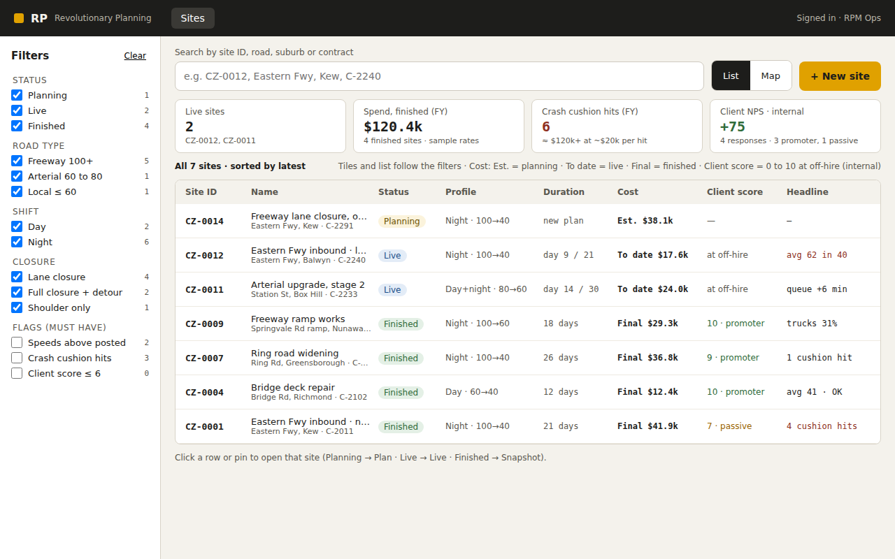
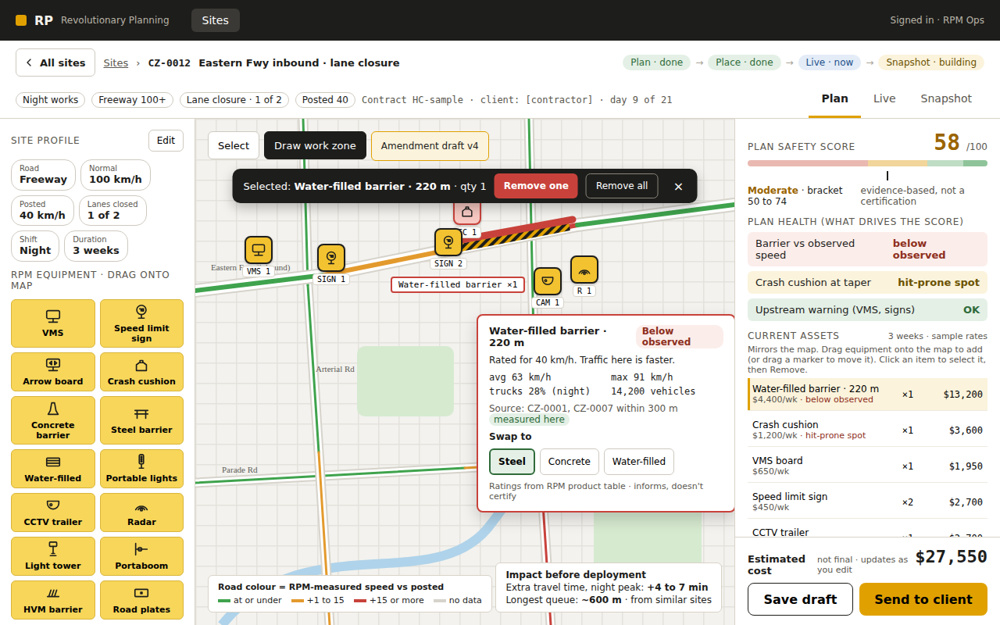
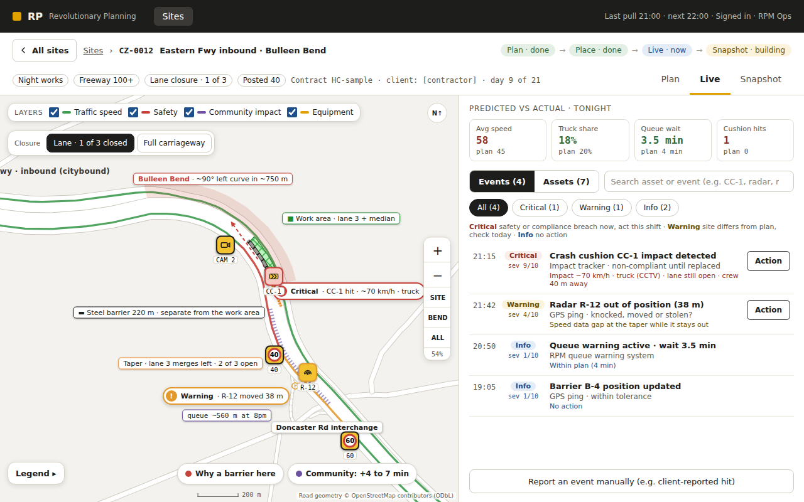
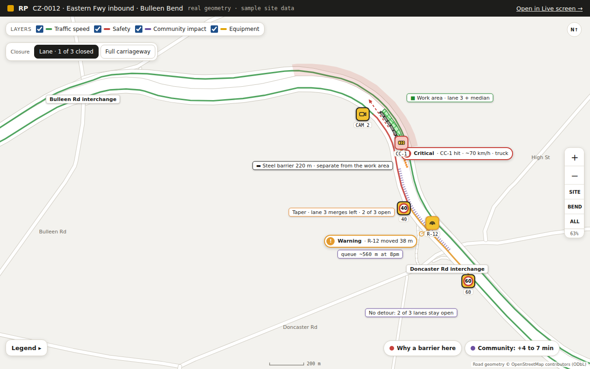
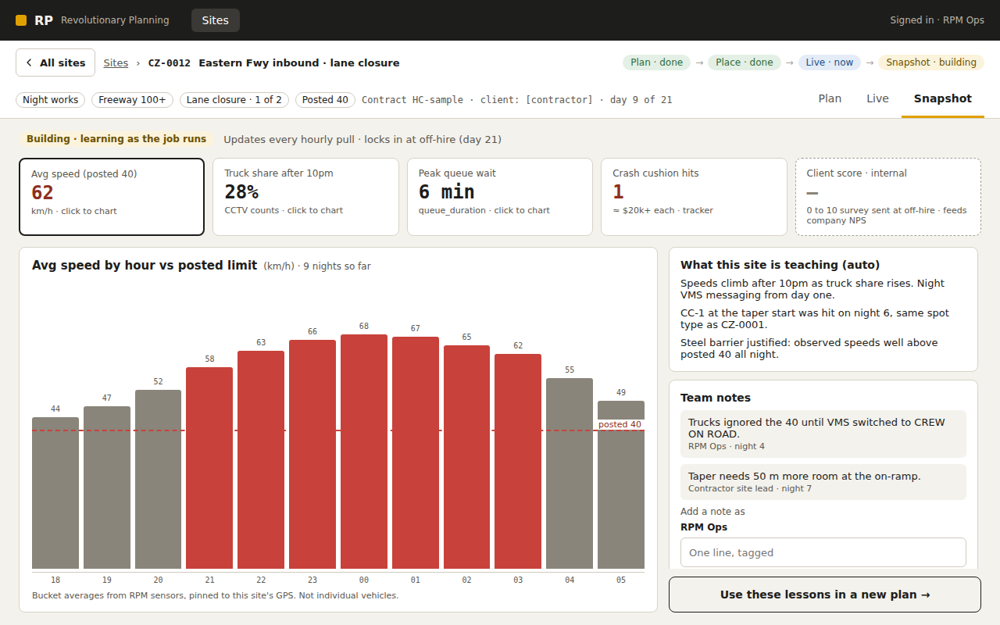
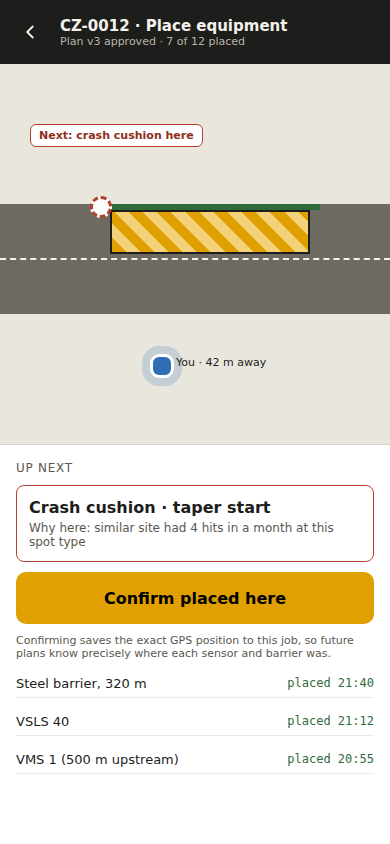
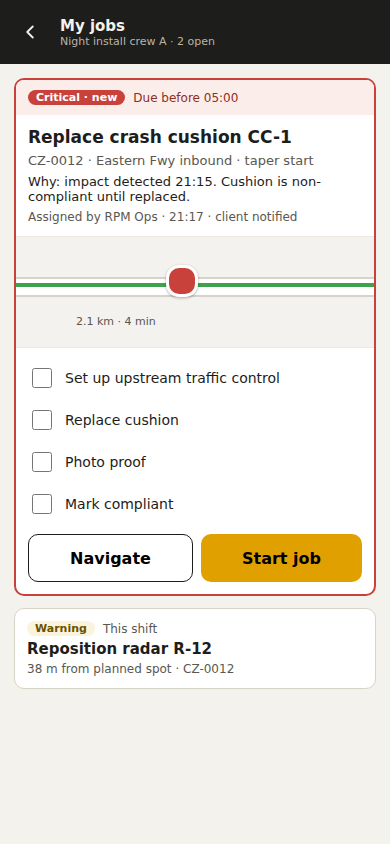
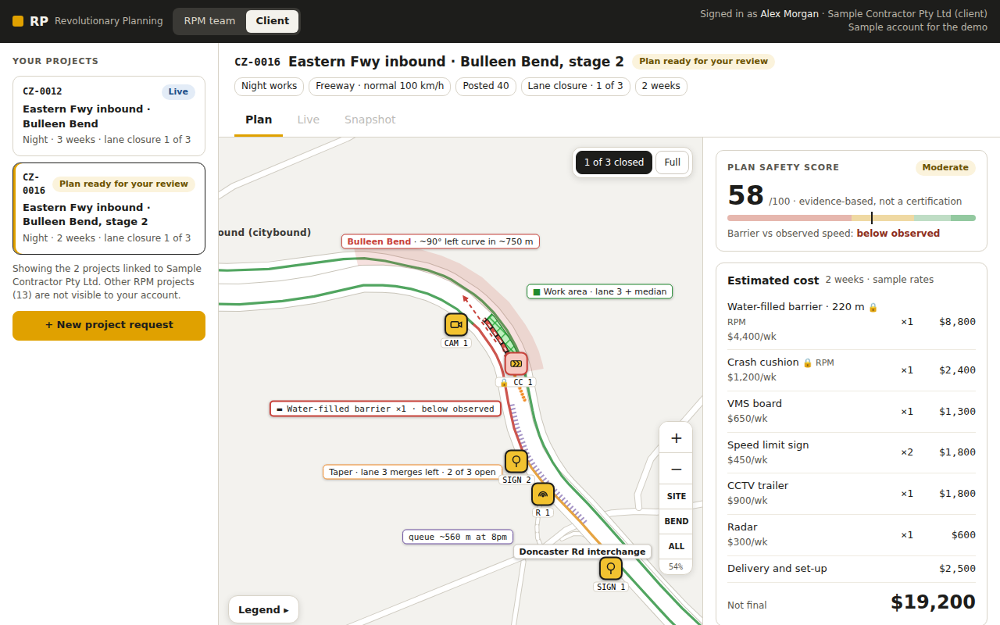
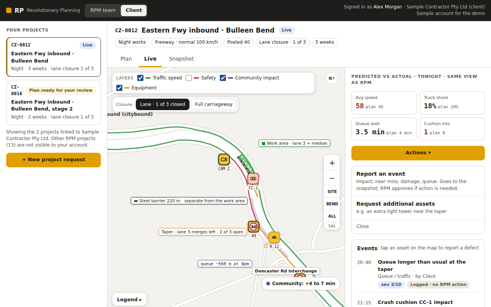
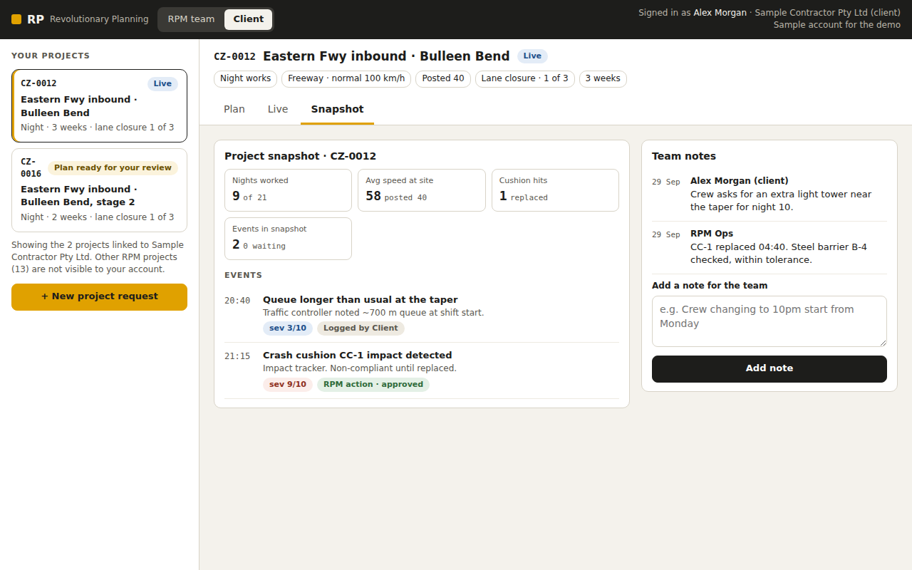

Problem 3 · Digital tool for temporary infrastructure
Road works have no memory. RP gives every site one.
Plan a work zone on a map, check it against what RPM's sensors measured at similar sites, and see the cost and a safety score before anything is deployed. Every finished job leaves a snapshot that improves the next plan.
Open RP →
Starts on Sites. Try the filters, then + New site. Client portal is in the next tab.

Before · overviewSitesFilters and search that drive the list, map and KPI tiles. + New site finds similar past jobs.

Before · planPlanDrag equipment onto the map, barrier evidence check, estimated cost and safety score.

DuringLiveLive map of the Bulleen Bend: layers, lane vs full closure, events and assets search, Action → job.

Evidence · mapBulleen Bend mapReal Eastern Fwy geometry, zoomable. Work area and barrier drawn separately; detour only when the closure stops traffic.

AfterSnapshotWhat the site learned, built from sensor data, plus team notes.

Crew · mobilePlace equipmentCrew places each item where the plan says.

Crew · mobileMy jobsJobs sent from Live, with location, reason and checklist.
Open the client portal →
Signed in as a sample client. Sees only its own projects.

Before · reviewPlan reviewSafety score, cost and the plan map. Move signs and cameras; barrier and cushion are locked. Confirm, or request an amendment.

DuringLiveSame view as RPM. Actions: report an event or request assets. Tap an asset to report a defect.

AfterSnapshotApproved and logged events, plus team notes.
How approvals work
- An event that needs RPM action shows Sent for approval, then Approved once the RPM manager reviews it in RPM › Live.
- An event with no RPM action goes straight into the snapshot.
What a client can change
- Draft plan: move non-critical equipment (signs, VMS, CCTV, radar).
- Barrier and crash cushion: locked by RPM.
- Confirmed plan: amendment requests only.
Prototype on sample data shaped like RPM Hire's MySQL schema. Rates, the safety score and event severity are placeholders until agreed with RPM. Sites you create stay for this browser tab only.